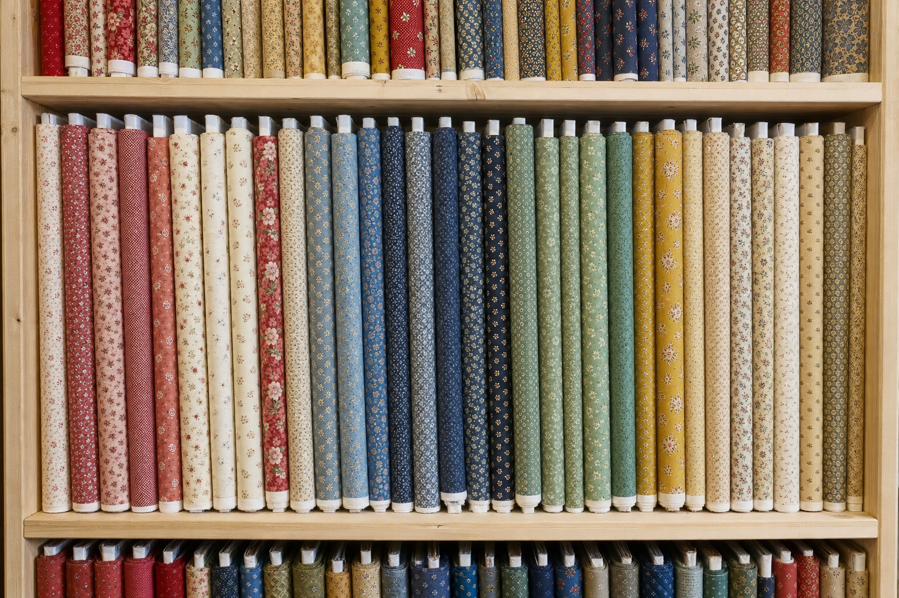
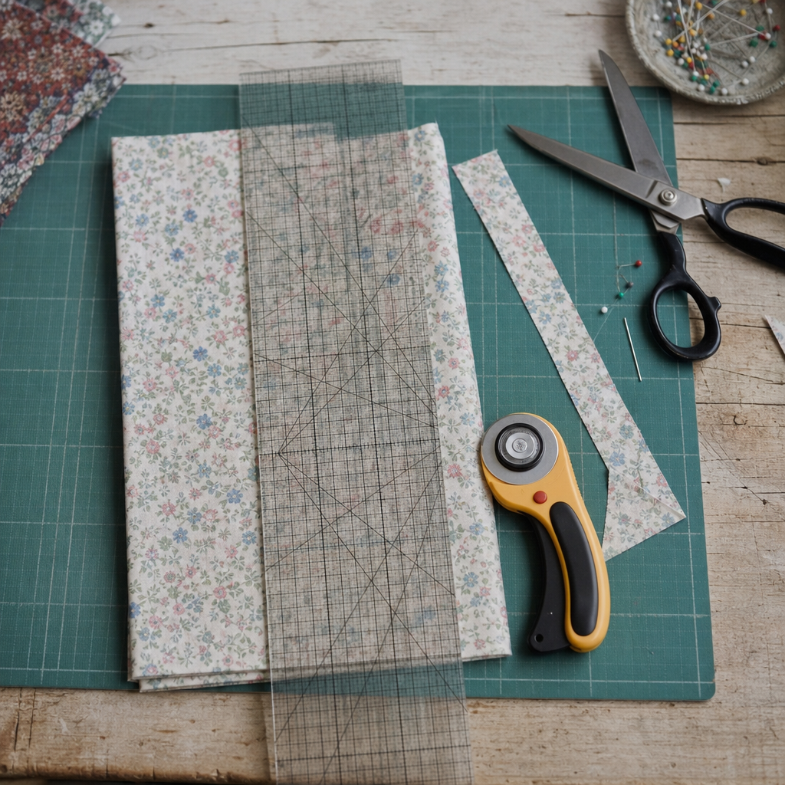
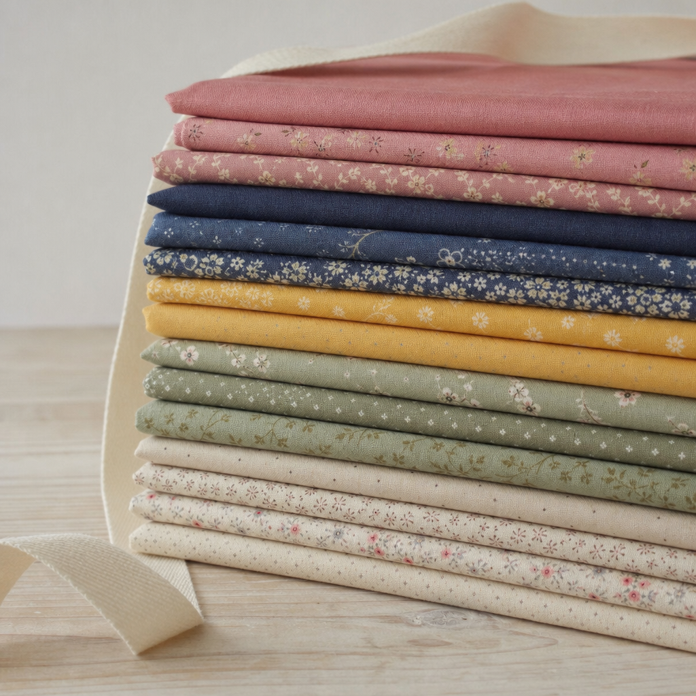
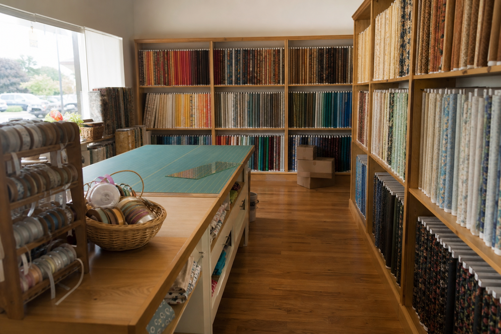

Quilting cotton, vintage fabric and linens. Sold by the half yard.
Reproduction prints and genuine vintage cloth, notions, cross-stitch patterns and old linens. Order it cut and posted, or come to Byers Street and put your hand on it first.
How it is cut.
Fabric is sold the way you actually use it. Tell us the cut, we cut it. Nothing is sold in a quantity that leaves you with an awkward remnant.
The standard cut, and the one most of the shop is priced by.
A wider, shorter quarter yard. Better for blocks than a long thin strip.
Cut off the bolt, any length from a half yard up, in half-yard steps.
Coordinated stacks pulled from the shelf, for when you want the palette decided for you.
Sold as found, one of each, with the wear described honestly before you buy.
Thread, needles, tape, glass-head pins, and cross-stitch patterns.



The shop on The Wharf.
6 Byers Street, in the historic Wharf district in downtown Staunton. Bolts on the wall, a cutting table in the middle, and a chair if you need to think about it.
We are still unpacking. New fabrics, notions and cross-stitch patterns are arriving daily, so the shelves look different most weeks. That is either a warning or an invitation, depending on how you feel about fabric.
five-star reviews, from people we have posted fabric to.
We have been cutting and shipping cloth for years. The shop on Byers Street is new; the packing is not.